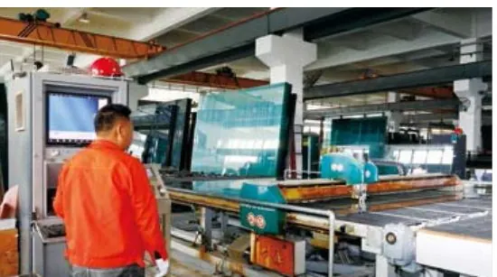
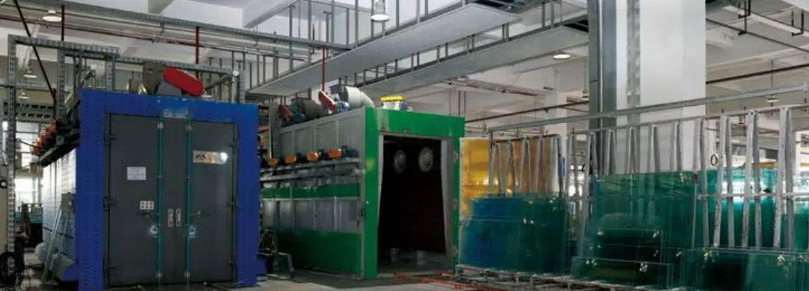

01TOUGHENED
鋼化玻璃
經高溫加熱再急速冷卻，強度約為普通玻璃數倍；破裂時碎成細粒，減低受傷風險。
- 常見用途
- 浴屏、門、窗、欄河
- 標準
- BS 6206:2009 · ANSI Z97.1:2009
好少鋁窗廠自己做玻璃加工。升威喺中山廠房完成切割、磨邊、鋼化、熱浸、夾膠及中空等工序，可配合升威門窗浴屏，亦可單獨訂購加工玻璃。
WhatsApp 查詢玻璃價錢


經高溫加熱再急速冷卻，強度約為普通玻璃數倍；破裂時碎成細粒，減低受傷風險。
鋼化玻璃再經熱浸爐處理，預先篩走含硫化鎳雜質的玻璃，大大減低自爆機會。
兩層或以上玻璃中間夾膠片，破裂時碎片黏住膠片唔會散落，亦有隔音效果。
雙層玻璃中間留空氣層並密封，有效隔熱隔音。
表面有低輻射或遮陽鍍膜，減少陽光熱力進入室內，夏天更涼、慳電。
先熱彎成型再鋼化，用於弧形設計。
在火災時一定時間內阻隔火焰。
通電時透明，斷電即變霧面，一按切換私隱。
玻璃背面加貼安全膜，破裂時防止碎片飛散。
蝕刻、噴砂、圖案及藝術玻璃，可按設計訂造。
3mm 至 22mm 清玻璃，可作進一步加工。
升威旗下快靚鏡採用泰國製 Guardian Glass 鏡，按尺寸切割磨邊。